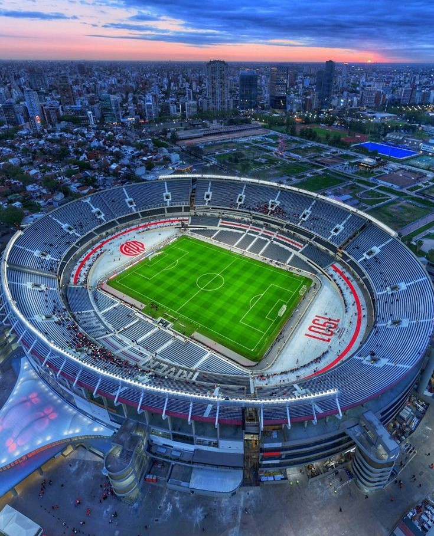

El Monumental más que un Estadio
El Estadio Mâs Monumental es la casa de River Plate y uno de los templos del fútbol sudamericano. Su remodelación reciente elevó la capacidad y mejoró la experiencia del hincha.
Además de albergar partidos históricos, es un símbolo de identidad para millones de riverplatenses

Ídolos que marcaron una época
A lo largo de su historia, River ha contado con figuras icónicas que dejaron huella por su talento y liderazgo.
Sus logros inspiraron generaciones y forjaron la mística del club.
- Alfredo Di Stéfano
- Enzo Francescoli
- Norberto Alonso
- Hernán Crespo
- Marcelo Gallardo
Estos son un poco de los muchos ídolos que tiene el club a lo largo de su historia